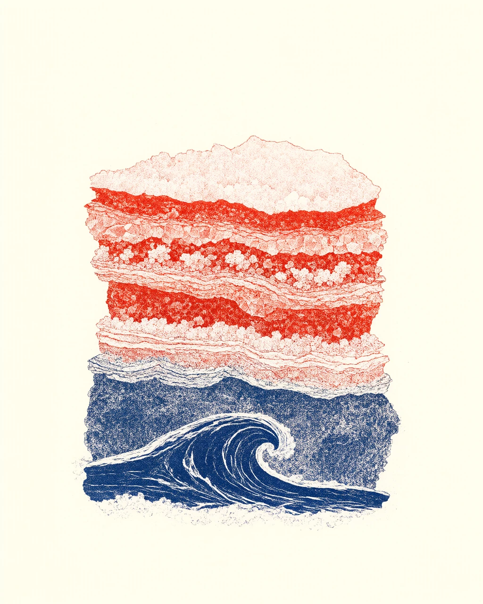

我还在生成。
这是孟祥博的生成校样。模型、提示词和废稿，都在这里。
孟祥博
未收敛 清样
摘要
ABSTRACT
孟祥博，用模型画画的人。写提示词，也删提示词。喜欢把不可控的东西收进一张画里；大多数时候，我在和随机种子较劲，偶尔赢。
孟祥博，用模型画画的人。写提示词，也删提示词。喜欢把不可控的东西收进一张画里（大多数时候收不进去）；大多数时候，我在和随机种子较劲，偶尔赢经常输，但没停。
关键词 生成图像 · 提示词 · 废稿 · 还在调
孟祥博2026.11
近况
NOW
最近在做的事。按重要程度排，不按时间。
- 把《潮汐标本》做完。 2026.11 进行中
- 训练自己的眼睛。 长期 继续
- 整理硬盘里的 1,200 张废稿。 2026.10 搁置
- 想下一张要生成什么。 — 待定
更新于 2026.11.03
图版
PLATES
最近的图。模型负责意外，我负责删。
批注
NOTES
一些还没删掉的想法。
-
01
风格是删出来的
风格不是选一种字体，是反复决定自己不要什么。删到不能再删，剩下的才是你。
-
02
模型不会替你决定
模型能给你一百个答案，但不能告诉你哪个是你。
-
03
两种字体
这一页用宋体负责正经，用楷体负责心虚。
写于 2026.11
来信
CONTACT